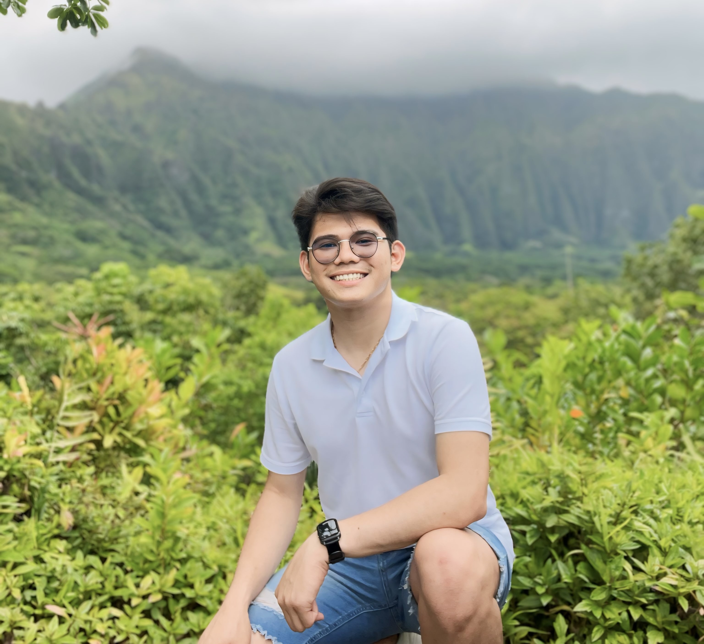

I am Jerome Bustarga, currently residing in Omaha, Nebraska. I am a student at Creighton University, pursuing a Bachelor of Science in Computer Science and Graphic Design and a minor in Digital Humanities with a Concentration in Undergraduate Research & Scholarship. I am on track to graduate in May 2026.
Currently, I hold two positions at Creighton University. Since January 2025, I have been working as a Practicum Student in the Web Development Team at Creighton iJay Store (Apple Authorized Campus Store). In this role, I assist in designing and developing responsive web pages using HTML, CSS, JavaScript, Java, and Python. I collaborate with senior developers to implement new features, participate in code reviews, and contribute to the maintenance of existing web applications.
Since August 2024, I have been working as a Community Engagement Intern at Creighton University's Office of Global & Community-Engaged Learning. This position has been instrumental in developing my project management and data analysis skills. I'm responsible for implementing logistical measures, coordinating events, and managing databases, all while utilizing my graphic design skills to create engaging materials.
I am bilingual, fluent in both English and Filipino. My technical skills span various programming languages including HTML, CSS, JavaScript, Python, Java, and MATLAB. I'm also proficient in frameworks and tools such as Django, MySQL, AWS, Microsoft Office, and Adobe Creative Cloud. My coursework has covered important areas such as Data Structures, Software Engineering, and Web Programming.
As I continue my academic and professional journey, I aim to leverage my unique combination of technical and creative skills in the fields of computer science and graphic design. I look forward to opportunities where I can apply these skills to create innovative solutions and make a positive impact in the digital world.